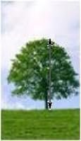
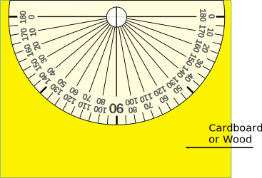
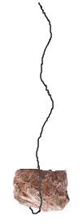
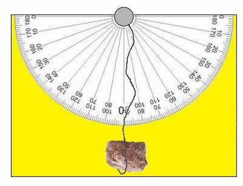
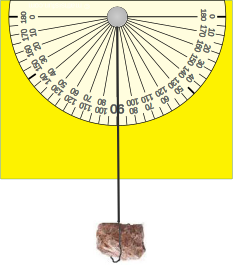
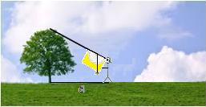

Activity: How High?
For this activity you will need:
- A piece of cardboard or thin sheet of wood, about the size of a sheet of paper.
- A piece of string about 30cm or 1 foot long:
- A drawing pin (thumbtack) or a small nail:
- A small rock (one you can tie the string to):
- A tape measure:
- scissors
- glue
Aim
The aim of this activity is to measure the height of a tall building or tree.I will illustrate this with a tree, but the method is just the same for a building.

Suppose you want to measure the height.
Can I just measure it with
a tape measure?
That won't be easy. You may have to climb the tree to do that. Dangerous!
But there is another, easier, way!
Measure a length along the ground and measure the angle θ to the top of the tree:

Surveyors and engineers use special equipment to measure these distances and angles accurately. The instrument they use to measure the angle is called a theodolite. In this activity you will make a simple theodolite. You won't get accurate answers, but it will help you to understand how surveyors do their work.
There are three parts to this activity:
- Making a simple theodolite.
- Measuring the angle and the distance along the ground.
- Using the measurements to find the height of the tree.
Making a Simple Theodolite
Step 1: Print
out this image of a protractor onto A4 paper.
You will need to change the page
orientation to landscape.
{kind=link}
Step 2: You do not need to cut out the picture of the protractor, but you will need to cut as near as you can to the top edge - just leave a small space, enough for you to attach the drawing pin or nail.
Step3: Glue your picture of the
protractor with its straight-edge lying along the
top edge of your
cardboard or timber:

Step 4: Tie the small rock to one end of the piece of string:

Step 5: Attach the other end of
the string to the top middle point of the
protractor using the drawing
pin or
nail:

When you allow the rock to pull the string downwards, gravity will make it hang vertically. Even if you tilt the piece of cardboard or timber at an angle, the string will still hang vertically:
 
Can you see how the angle of 30° is related to the angle shown by the string on the protractor?
Measuring the Angle
and the Distance Along the Ground
First of all, find a good place to stand about 100 feet or 30m away from the tree. Make sure that you are standing on level ground and in a safe place. Mark the place with a stick. Now you are ready to measure.
To measure the angle, you just point your 'theodolite'' towards the top of the tree. Put your eye as close as possible to one edge of the protractor; then, looking along the straight edge, point it directly at the top of the tree:

Hold the string and weight in position before you lower the theodolite. Then read the angle from the theodolite as the angle the vertical weight on the string makes with the protractor. Adjust your answer to find the angle of elevation, θ, from your eye to the top of the tree.
To find the distance, d, use your tape measure to measure from the stick to the base of the tree, or more exactly to the midpoint of the base of the tree - can you see how to make allowance for that?
Using the Measurements to Find the Height of the Tree
You can calculate the height of the tree using a scale diagram on a
piece of paper,
following these steps:
- Draw a horizontal line:
- At a point, C, near the right end of the line, measure an angle equal to the angle, θ, from your experiment:
- Choosing a suitable scale, measure the distance x equivalent to the distance d you measured in your experiment. Mark a point B:
- Draw the perpendicular at B to meet the sloping line at A:
- Measure the height, y, of A above B:
- Using the scale from step 3, convert y back to find the height, h, of the tree.
Wait!
- Did you notice anything wrong?
- Where was your eye when you measured the angle θ?
- Can you think of a way to compensate for that error?
Another Way
There is an alternative way to calculate the height of the tree using trigonometry.
If you know how to do this, then go ahead.
- How accurate will your answer be?
Can you list below some things about this experiment that tell you that your answer is not very accurate?
Any more?
Try to find out how a real theodolite is made and why it gives much more accurate measurements.